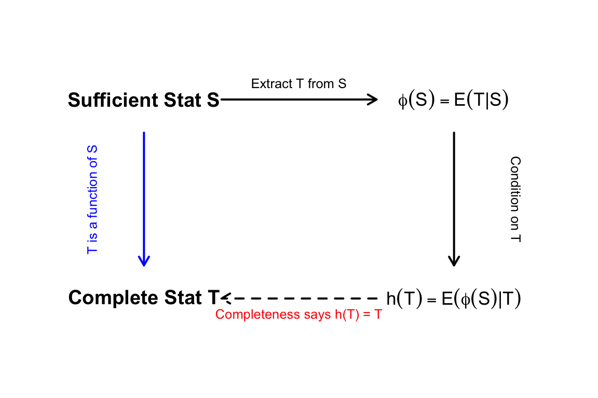
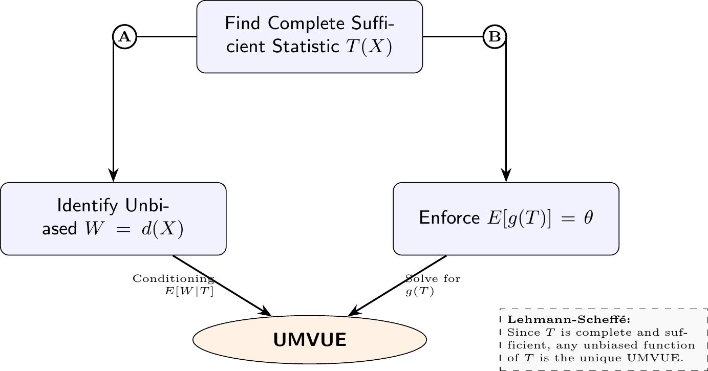

7 Minimum Variance Estimators
7.1 Completeness
7.1.1 Complete Statistic
Definition 7.1 (Complete Statistic) A statistic \(T\) is said to be complete if for any real-valued function \(g\), \[ E[g(T)|\theta] = 0 \quad \text{for all } \theta \] implies \[ P(g(T) = 0 | \theta) = 1 \quad \text{for all } \theta \]
Corollary 7.1 (Uniqueness of Unbiased Estimator) Let \(T\) be a complete statistic for a family of distributions \(\mathcal{P} = \{P_\theta : \theta \in \Omega\}\). If there exists an unbiased estimator for \(\theta\) (or a parametric function \(\tau(\theta)\)) that is strictly a function of \(T\), then this estimator is unique almost everywhere.
Proof. Suppose there are two functions of \(T\), say \(g_1(T)\) and \(g_2(T)\), that are both unbiased estimators for \(\theta\). By the definition of unbiasedness, we have:
\[ E_\theta[g_1(T)] = \theta \]
and
\[ E_\theta[g_2(T)] = \theta \]
for all \(\theta \in \Omega\).
Subtracting the second equation from the first yields:
\[ E_\theta[g_1(T) - g_2(T)] = 0 \]
for all \(\theta \in \Omega\).
Let \(w(T) = g_1(T) - g_2(T)\). The equation above establishes that:
\[ E_\theta[w(T)] = 0 \]
for all \(\theta\).
Because \(T\) is a complete statistic, the definition of completeness dictates that the only measurable function of \(T\) with an expected value of zero for all \(\theta\) is the function that is zero almost everywhere. Therefore, we conclude:
\[ P_\theta(w(T) = 0) = 1 \]
which directly implies:
\[ P_\theta(g_1(T) = g_2(T)) = 1 \]
for all \(\theta \in \Omega\). Thus, \(g_1(T)\) and \(g_2(T)\) are identical with probability 1, proving that the unbiased estimator which is a function of \(T\) is unique.
Example 7.1 (Uniform Distribution (Not Complete)) Let \(X_1, \dots, X_n \sim \text{Unif}(\theta-1, \theta+1)\). The statistic \(T(X) = (X_{(1)}, X_{(n)})\) is a Minimal Sufficient Statistic. However, it is not complete.
Properties of Order Statistics via Transformation
Instead of deriving the joint distribution of the order statistics using calculus, we can simplify the problem by standardizing the variables. Let \(U_i = X_i - \theta\). The transformed variables \(U_1, \dots, U_n\) are independent and identically distributed as \(\text{Unif}(-1, 1)\).
The order statistics preserve this additive transformation:
\[ X_{(k)} = U_{(k)} + \theta \]
For a uniform distribution on \((-1, 1)\), the expected values of the minimum and maximum order statistics are standard results:
\[ E[U_{(1)}] = -\frac{n-1}{n+1} \]
and
\[ E[U_{(n)}] = \frac{n-1}{n+1} \]
Consequently, the expected values for the extreme order statistics of our original sample \(X\) are simply shifted by \(\theta\):
\[ E[X_{(1)}] = \theta - \frac{n-1}{n+1} \]
and
\[ E[X_{(n)}] = \theta + \frac{n-1}{n+1} \]
The range \(R\) of the sample is invariant to the location shift \(\theta\):
\[ R = X_{(n)} - X_{(1)} = U_{(n)} - U_{(1)} \]
Because the distribution of the range depends only on the \(U_i\) variables, it has no dependence on \(\theta\), making \(R\) an ancillary statistic. Its expected value is directly obtained from the expectations above without needing to integrate the joint density:
\[ E[R] = E[X_{(n)}] - E[X_{(1)}] = \frac{n-1}{n+1} - \left(-\frac{n-1}{n+1}\right) = \frac{2(n-1)}{n+1} \]
Two Distinct Unbiased Estimators
Because the minimal sufficient statistic \(T(X) = (X_{(1)}, X_{(n)})\) is not complete, we can construct multiple unbiased estimators for \(\theta\) that are purely functions of \(T\):
The Midrange Estimator (\(W_1\)) Consider the midrange, \(W_1 = \frac{X_{(1)} + X_{(n)}}{2}\). Using the expectations derived above, we take the expected value:
\[ E[W_1] = \frac{E[X_{(1)}] + E[X_{(n)}]}{2} = \frac{\left(\theta - \frac{n-1}{n+1}\right) + \left(\theta + \frac{n-1}{n+1}\right)}{2} = \theta \]
Thus, \(W_1\) is an unbiased estimator of \(\theta\) and is strictly a function of \(T\).
The Adjusted Estimator (\(W_2\)) To elegantly illustrate the consequence of \(T\) being incomplete, we can identify a non-trivial function of the statistic that has an expected value of zero. Let \(V(T)\) be a function based on the range \(R\). Since we know \(E[R] = \frac{2(n-1)}{n+1}\), the following statistic has a mean of zero for all \(\theta\):
\[ V(T) = R - \frac{2(n-1)}{n+1} = X_{(n)} - X_{(1)} - \frac{2(n-1)}{n+1} \]
We can now form a new unbiased estimator \(W_2\) by adding this zero-mean statistic \(V(T)\) to our first estimator \(W_1\):
\[ W_2 = W_1 + V(T) = \frac{X_{(1)} + X_{(n)}}{2} + X_{(n)} - X_{(1)} - \frac{2(n-1)}{n+1} \]
Taking the expectation yields \(E[W_2] = E[W_1] + E[V(T)] = \theta + 0 = \theta\).
Both \(W_1\) and \(W_2\) are functions of the minimal sufficient statistic \(T\), and both are unbiased for \(\theta\). However, since \(V(T)\) is not identically zero, \(W_1 \neq W_2\) almost everywhere. According to the Lehmann-Scheffé theorem, an unbiased estimator based on a complete sufficient statistic must be unique. By demonstrating that we can construct two distinct unbiased estimators based on \(T\), we have proven that \(T\) is not complete.
7.1.2 Exponential Family Completeness
Lemma 7.1 (Exponential Family Completeness) If \(T = (T_1, \dots, T_k)\) is the natural statistic of an exponential family that contains an open rectangle in the parameter space, then \(T\) is complete.
Proof. Proof of Lemma Lemma 7.1:
Consider a \(k\)-parameter exponential family in canonical form with density: \[ f(y|\boldsymbol{\eta}) = h(y) \exp\left( \sum_{j=1}^k \eta_j T_j(y) - A(\boldsymbol{\eta}) \right) \] where \(\boldsymbol{\eta}\) belongs to a natural parameter space \(\Xi\) that contains a \(k\)-dimensional open rectangle.
Let \(g(T)\) be a function such that \(E_{\boldsymbol{\eta}}[g(T)] = 0\) for all \(\boldsymbol{\eta} \in \Xi\). The expectation is defined as: \[ \int g(t) h(t) \exp\left( \sum_{j=1}^k \eta_j t_j - A(\boldsymbol{\eta}) \right) dt = 0 \]
Since \(\exp(-A(\boldsymbol{\eta}))\) is a strictly positive constant with respect to \(t\), we can divide it out: \[ \int g(t) h(t) \exp\left( \sum_{j=1}^k \eta_j t_j \right) dt = 0 \]
We can decompose \(g(t)\) into its positive and negative parts, \(g(t) = g^+(t) - g^-(t)\). Substituting this in gives: \[ \int g^+(t) h(t) e^{\sum \eta_j t_j} dt = \int g^-(t) h(t) e^{\sum \eta_j t_j} dt \]
These integrals represent the multivariate Laplace transforms of the measures \(m^+(t) = g^+(t)h(t)\) and \(m^-(t) = g^-(t)h(t)\). A fundamental property of Laplace transforms is that if two transforms are equal over an open set (in this case, the open rectangle in \(\Xi\)), then the underlying measures must be identical almost everywhere.
Therefore, \(g^+(t)h(t) = g^-(t)h(t)\), which implies \(g(t) = 0\) almost everywhere with respect to the distribution of \(T\). Thus, \(T\) is complete.
7.1.3 Relationship Between Completeness and Minimality
While sufficiency ensures that a statistic captures all information about \(\theta\), and minimality ensures it does so without redundancy, completeness is a stronger property that guarantees the statistic is “uniquely informative” for unbiased estimation.
Theorem 7.1 (Completeness to Minimal Sufficiency) If \(T\) is a complete sufficient statistic for a family of distributions \(\{f(x|\theta) : \theta \in \Theta\}\), then \(T\) is also a minimal sufficient statistic.
Proof. To prove \(T\) is minimal sufficient, we must show that for any other sufficient statistic \(S\), \(T\) is a function of \(S\).
Define a Conditional Expectation:
Let \(S\) be any sufficient statistic. Define the statistic \(\phi(S) = E[T|S]\). Because \(S\) is sufficient, \(\phi(S)\) is a valid statistic (it does not depend on \(\theta\)).
Compare Expectations:
By the Law of Iterated Expectations: \[ E[\phi(S)] = E[E[T|S]] = E[T] \] This implies that \(E[\phi(S) - T] = 0\) for all \(\theta \in \Theta\).
Construct a Function of T:
Define \(h(T) = E[\phi(S)|T]\). Since \(T\) is sufficient, \(h(T)\) is a statistic. By the properties of expectation: \[ E[h(T)] = E[E[\phi(S)|T]] = E[\phi(S)] = E[T] \] Therefore, \(E[h(T) - T] = 0\) for all \(\theta \in \Theta\).
Apply Completeness:
Since \(g(T) = h(T) - T\) is a function of \(T\) whose expectation is zero for all \(\theta\), and \(T\) is complete, it follows that: \[ g(T) = 0 \implies h(T) = T \quad \text{with probability 1.} \]
Conclusion:
Since \(T\) is a function of \(\phi(S)\) (which is a function of \(S\)), \(T\) must be a function of \(S\). Since this holds for any sufficient statistic \(S\), \(T\) is minimal sufficient.
The relationship between statistics types is visualized by Figure 7.2:

Example 7.2 (Minimal Sufficient Statistic is Not Necessarily Complete) It is important to note that the converse is not generally true: a minimal sufficient statistic is not necessarily complete.
A standard counterexample is a random sample \(X_1, \dots, X_n \sim \text{Unif}(\theta-1, \theta+1)\). For this distribution, the statistic \(T(X) = (X_{(1)}, X_{(n)})\) is a minimal sufficient statistic for \(\theta\). However, it is not complete because the range \(R = X_{(n)} - X_{(1)}\) is an ancillary statistic. Its distribution does not depend on \(\theta\), meaning we can construct a non-zero function of \(T\) that has an expected value of zero for all \(\theta\).
7.2 UMVUE
7.2.1 Definition
Definition 7.2 (Uniformly Minimum Variance Unbiased Estimator (UMVUE)) A statistic \(T(x)\) is a UMVUE for \(\theta\) if:
- \(E(T(x)|\theta) = \theta\) for all \(\theta\) (Unbiased).
- \(\text{Var}(T(x)|\theta) \le \text{Var}(d(x)|\theta)\) for all \(\theta\) and for all other unbiased estimators \(d(x)\).
7.2.2 Rao-Blackwell Theorem
The Rao-Blackwell theorem provides a mechanism for improving an estimator by utilizing a sufficient statistic.
Theorem 7.2 (Rao-Blackwell Theorem) Given that \(T\) is a sufficient statistic and \(d_1(x)\) is an unbiased estimator (\(E[d_1(x)] = \theta\)). Define \(g(T) = E[d_1(x) | T]\). Then:
- \(g(T)\) is a statistic (independent of \(\theta\)).
- \(E[g(T)] = \theta\) (Unbiased).
- \(\text{Var}(g(T)) \le \text{Var}(d_1(x))\).
Proof.
- Statistic Property: By the definition of sufficiency, the conditional distribution of \(X\) given \(T\) does not depend on \(\theta\). Thus, \(g(T) = E[d_1(x)|T]\) does not involve \(\theta\) and is a valid statistic.
- Unbiasedness: By the Law of Iterated Expectations:
\[ E[g(T)] = E_T[ E_X(d_1(X)|T) ] = E_X[d_1(X)] = \theta \]
- Variance Reduction: Using the Law of Total Variance:
\[ \text{Var}(d_1(X)) = \text{Var}(E[d_1(X)|T]) + E[\text{Var}(d_1(X)|T)] = \text{Var}(g(T)) + E[\text{Var}(d_1(X)|T)] \] Since \(\text{Var}(d_1(X)|T) \ge 0\), it follows that \(E[\text{Var}(d_1(X)|T)] \ge 0\). Therefore, \(\text{Var}(g(T)) \le \text{Var}(d_1(X))\). Equality holds only if \(d_1(X) = g(T)\) almost surely.
7.2.3 Lehmann-Scheffé Theorem
While Rao-Blackwell improves an estimator, Lehmann-Scheffé ensures that we have found the best one.
Theorem 7.3 (Lehmann-Scheffé Theorem) If \(T\) is a complete and sufficient statistic, and there is an unbiased estimator \(d(X)\) such that \(E[d(X)] = \theta\), then \(\phi(T) = E[d(X)|T]\) is the unique UMVUE for \(\theta\).
Proof.
- Existence: From Rao-Blackwell, \(\phi(T)\) is an unbiased estimator with variance at most that of any \(d(X)\).
- Uniqueness: Suppose there exists another unbiased estimator \(\psi(T)\) that is also a function of the same complete sufficient statistic \(T\). Then:
\[ E[\phi(T) - \psi(T) | \theta] = E[\phi(T)|\theta] - E[\psi(T)|\theta] = \theta - \theta = 0 \] By the property of completeness for \(T\), \(E[g(T)] = 0\) implies \(P(g(T)=0) = 1\). Thus, \(\phi(T) = \psi(T)\) almost surely. This proves that \(\phi(T)\) is the unique unbiased estimator based on \(T\), and therefore the unique UMVUE.
7.3 A Procedure to Find UMVUE

Example 7.3 (Poisson UMVUE for \(\lambda^2\)) Let \(X_1, \dots, X_n \sim \text{Poisson}(\lambda)\). \(T = \sum X_i\) is complete sufficient. \(E[X_1^2 - X_1] = E[X_1^2] - E[X_1] = (\lambda^2 + \lambda) - \lambda = \lambda^2\). So \(d(X) = X_1^2 - X_1\) is unbiased. The UMVUE is \(g(T) = E[X_1(X_1-1) | T]\). Using the moments of \(X_1|T \sim \text{Bin}(T, 1/n)\): \[g(T) = \frac{T(T-1)}{n^2}\]
Sol A: Rao-Blackwellization (Conditioning)
- Find a simple unbiased estimator: Consider \(W = X_1(X_1 - 1)\).
\[ E[W] = E[X_1^2] - E[X_1] = (\lambda^2 + \lambda) - \lambda = \lambda^2 \] Thus, \(W\) is unbiased for \(\lambda^2\).
Condition on the complete sufficient statistic:
The UMVUE is \(\phi(T) = E[X_1(X_1 - 1) | T]\). Recall that the conditional distribution of \(X_1\) given \(T=t\) is \(\text{Binomial}(t, 1/n)\).
Compute the conditional expectation:
Using the second factorial moment of a \(\text{Binomial}(t, p)\) distribution, \(E[Y(Y-1)] = t(t-1)p^2\): \[ \phi(T) = E[X_1(X_1 - 1) | T] = T(T - 1) \left(\frac{1}{n}\right)^2 = \frac{T(T - 1)}{n^2} \]
Sol B: The Direct Method (Enforcing Unbiasedness)
Identify the distribution of \(T\):
Since \(X_i \sim \text{Poisson}(\lambda)\), the sum \(T = \sum X_i\) follows: \[ T \sim \text{Poisson}(n\lambda) \]
Propose a functional form for \(g(T)\):
For any \(Y \sim \text{Poisson}(\mu)\), \(E[Y(Y-1)] = \mu^2\). Here, \(\mu = n\lambda\), so: \[ E[T(T-1)] = (n\lambda)^2 = n^2 \lambda^2 \]
Adjust for unbiasedness:
To get an expected value of exactly \(\lambda^2\), we scale by \(1/n^2\): \[ E\left[ \frac{T(T-1)}{n^2} \right] = \frac{1}{n^2} (n^2 \lambda^2) = \lambda^2 \]
Conclusion:
By the Lehmann-Scheffé Theorem, \(g(T) = \frac{T(T-1)}{n^2}\) is the unique UMVUE.
7.3.1 Example: Joint UMVUE in the Normal Family
The power of the Exponential Family lemma is most evident when dealing with distributions involving multiple parameters, such as the Normal distribution.
Example 7.4 (Joint UMVUE for \(\mu\) and \(\sigma^2\)) Let \(X_1, \dots, X_n \sim N(\mu, \sigma^2)\) where both parameters are unknown. The joint density can be written in the canonical exponential form:
\[ f(\mathbf{x}|\mu, \sigma^2) = \underbrace{(2\pi\sigma^2)^{-n/2} \exp\left(-\frac{n\mu^2}{2\sigma^2}\right)}_{C(\boldsymbol{\eta})} \exp\left( \frac{\mu}{\sigma^2}\sum x_i - \frac{1}{2\sigma^2}\sum x_i^2 \right) \]
Identify Natural Statistics:
The natural sufficient statistics are \(T_1 = \sum X_i\) and \(T_2 = \sum X_i^2\). Because the natural parameter space contains an open rectangle in \(\mathbb{R} \times \mathbb{R}^-\), the vector \((T_1, T_2)\) is complete and sufficient.
Transformation to Common Estimators:
Any one-to-one mapping of a complete sufficient statistic is also complete and sufficient. We can define: \[ \overline{X} = \frac{T_1}{n} \quad \text{and} \quad S^2 = \frac{1}{n-1}\left( T_2 - \frac{T_1^2}{n} \right) \] Since \((\overline{X}, S^2)\) is a one-to-one function of \((T_1, T_2)\), it is also a complete sufficient statistic.
Applying Lehmann-Scheffé:
- Since \(E[\overline{X}] = \mu\) and \(\overline{X}\) is a function of the complete sufficient statistic, \(\overline{X}\) is the UMVUE for \(\mu\).
- Since \(E[S^2] = \sigma^2\) and \(S^2\) is a function of the complete sufficient statistic, \(S^2\) is the UMVUE for \(\sigma^2\).
7.3.2 Example: UMVUE for \(\log(\sigma^2)\) in the Normal Family
Example 7.5 (UMVUE for \(\log(\sigma^2)\) in the Normal Family) While we saw that no UMVUE exists for \(\log(\lambda)\) in the Poisson case, an unbiased estimator for the log-variance does exist in the Normal distribution \(N(\mu, \sigma^2)\).
The Target: We want to estimate \(g(\sigma^2) = \log(\sigma^2)\).
Distributional Fact: Recall that for a sample of size \(n\), the statistic \(Y = \frac{(n-1)S^2}{\sigma^2}\) follows a \(\chi^2_{n-1}\) distribution (which is a \(\text{Gamma}(\alpha = \frac{n-1}{2}, \beta = 2)\) distribution).
Log-Moments of Gamma: For a variable \(W \sim \text{Gamma}(\alpha, \beta)\), the expected value of its logarithm is:
\[ E[\log(W)] = \psi(\alpha) + \log(\beta) \] where \(\psi(x) = \frac{d}{dx} \log \Gamma(x)\) is the digamma function.
Deriving the Estimator:
Expanding the expectation of \(Y\) and rearranging to isolate \(\log(\sigma^2)\): \[ E\left[ \log(S^2) + \left( \log\left(\frac{n-1}{2}\right) - \psi\left(\frac{n-1}{2}\right) \right) \right] = \log(\sigma^2) \]
Conclusion:
Since \(S^2\) is a complete sufficient statistic, the Lehmann-Scheffé Theorem implies: \[ \widehat{\log(\sigma^2)}_{\text{UMVUE}} = \log(S^2) + C(n) \] where \(C(n) = \log\left(\frac{n-1}{2}\right) - \psi\left(\frac{n-1}{2}\right)\) is the positive correction term.
Because the logarithm is a concave function, Jensen’s Inequality tells us that \(E[\log(S^2)] < \log(E[S^2]) = \log(\sigma^2)\). Therefore, \(\log(S^2)\) is “too small,” and we must add a positive value \(C(n)\) to reach unbiasedness.
Numerical Values of the Correction
As seen in Table 7.1, the bias is quite severe for small samples but vanishes as \(n \to \infty\).
| \(n\) | \(\alpha = \frac{n-1}{2}\) | Positive Correction \(C(n)\) |
|---|---|---|
| 2 | 0.5 | 1.2704 |
| 5 | 2.0 | 0.2704 |
| 10 | 4.5 | 0.1152 |
| 30 | 14.5 | 0.0349 |
| 100 | 49.5 | 0.0101 |
7.4 Asymptotic Optimality: UMVUE, CRLB, and the MLE
7.4.1 The Cramér-Rao Lower Bound as an Optimality Check
While the Lehmann-Scheffé theorem provides a constructive path to finding the UMVUE via conditioning on a complete sufficient statistic, the Cramér-Rao Lower Bound (CRLB) provides a theoretical variance floor to verify optimality directly.
Recall that for any unbiased estimator \(T(X)\) of \(\theta\), its variance is bounded below by the inverse of the Fisher Information: \[ \text{Var}(T(X)) \ge \mathcal{I}_n(\theta)^{-1} \]
If you identify an unbiased estimator whose variance exactly equals \(\mathcal{I}_n(\theta)^{-1}\), you have mathematically proven it is the UMVUE. It has hit the absolute floor of information extraction; no other unbiased estimator can possibly possess a smaller variance.
7.4.2 The Asymptotic Triumph of the MLE
In finite samples, finding an estimator that achieves the exact Cramér-Rao Lower Bound is rare (typically only occurring for specific parameterizations within the Exponential Family). Furthermore, the Maximum Likelihood Estimator (MLE) is often biased in finite samples (for example, the MLE for normal variance divides by \(n\) instead of \(n-1\)), meaning it is frequently not the UMVUE for a fixed sample size \(n\).
However, as \(n \to \infty\), the MLE becomes the undisputed champion of estimation. Recall the established asymptotic sampling distribution of the MLE: \[ \sqrt{n}(\hat{\theta}_{\text{MLE}} - \theta^*) \xrightarrow{d} \mathcal{N}\Big(0, \mathcal{I}_1(\theta^*)^{-1}\Big) \]
This result reveals three profound asymptotic properties of the MLE:
- Consistency: The bias strictly vanishes (\(\hat{\theta}_{\text{MLE}} \xrightarrow{p} \theta^*\)).
- Asymptotic Normality: The sampling distribution converges to a Gaussian centered exactly on the truth.
- Asymptotic Efficiency: The variance of this limiting distribution shrinks to exactly match the Cramér-Rao Lower Bound.
Because its asymptotic covariance perfectly matches the inverse Fisher Information matrix, the MLE is asymptotically UMVUE.
To understand this intuitively, we can think of the Fisher Information, \(\mathcal{I}(\boldsymbol{\theta}^*)\), as a measure of how sharply the log-likelihood function peaks around the true parameter. A sharper peak means the data provides clearer, more precise information. The Cramér-Rao Lower Bound (CRLB) translates this “sharpness” into a strict mathematical floor: it represents the absolute minimum variance any unbiased estimator can possibly achieve.The fundamental takeaway of Maximum Likelihood estimation is this: while the MLE might not be the perfect UMVUE for a small sample, as the sample size grows (\(n \to \infty\)), its variance shrinks until it exactly hits the CRLB floor. Because it achieves this theoretical limit of precision, the MLE is called asymptotically efficient. For large datasets, no other unbiased estimator can extract more information or provide a tighter variance than the Maximum Likelihood Estimator.